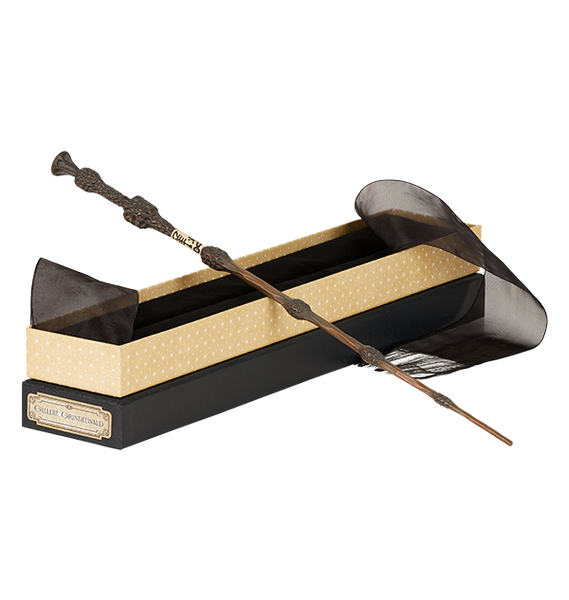
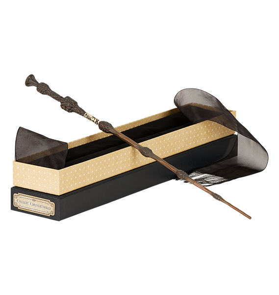
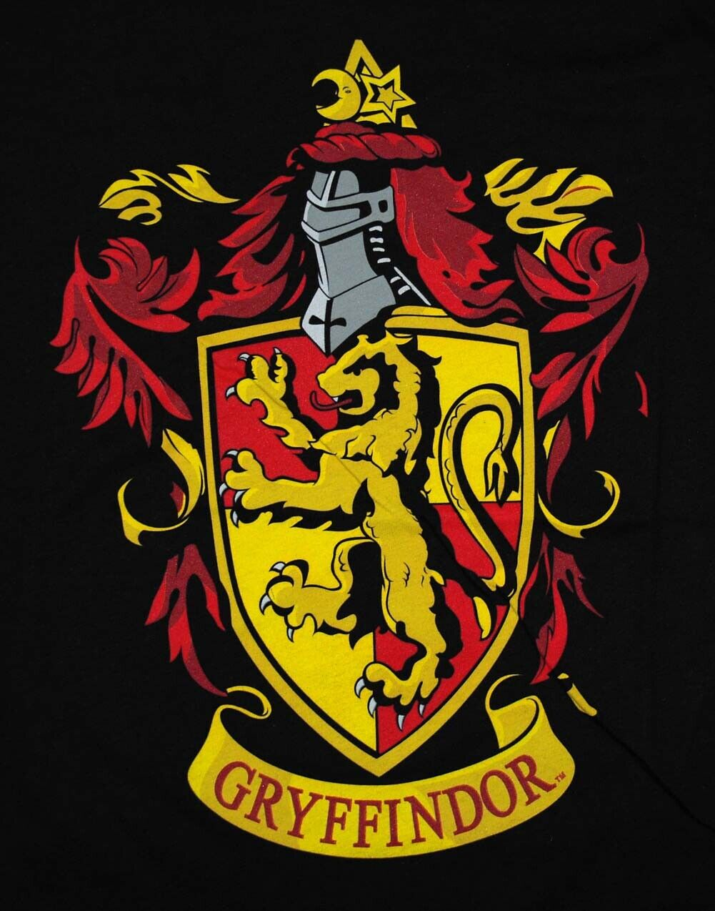
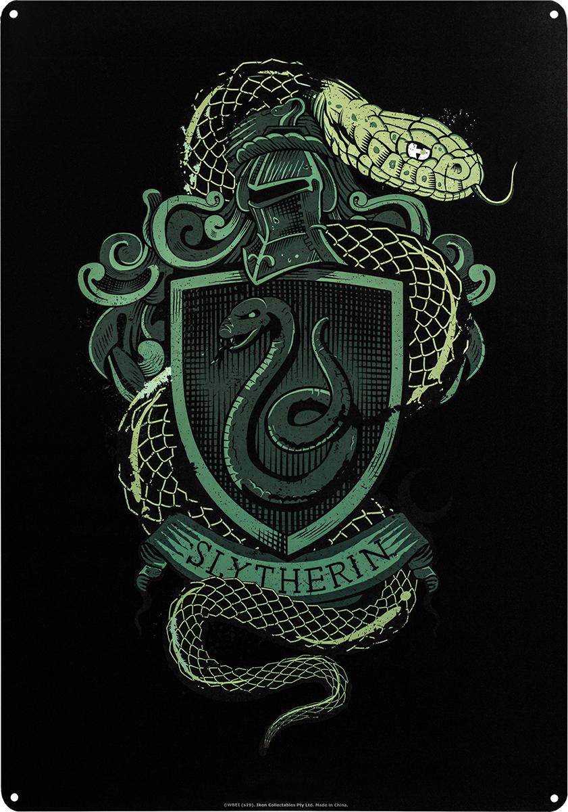
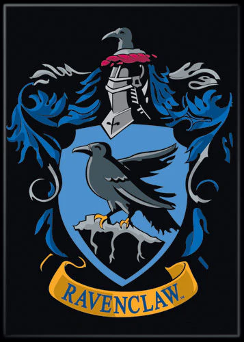
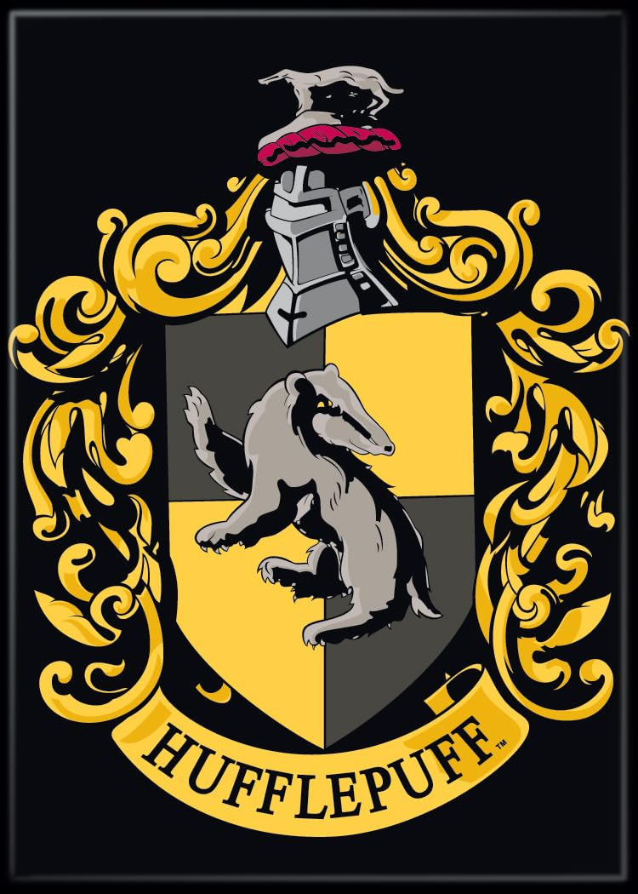

Explore the Hogwarts Houses
Hover over a crest to discover the house's traits. Click to enter their common room!

Gryffindor
Bravery, courage, determination.
🦁 Fun Fact: Their ghost is Nearly Headless Nick!

Slytherin
Slytherin values ambition, cunning, leadership, and resourcefulness.
🐍 Fun Fact: Their ghost is The Bloody Baron!

Ravenclaw
Ravenclaw values intelligence, creativity, learning, and wit.
🦅 Fun Fact: Their ghost is The Grey Lady!

Hufflepuff
Hufflepuff values hard work, patience, loyalty, and fair play.
🦡 Fun Fact: Their ghost is The Fat Friar!